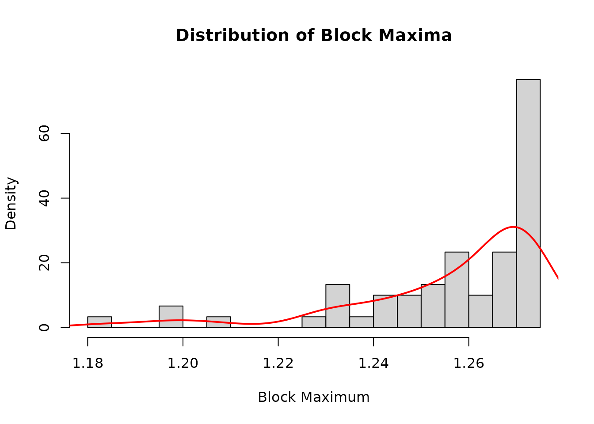
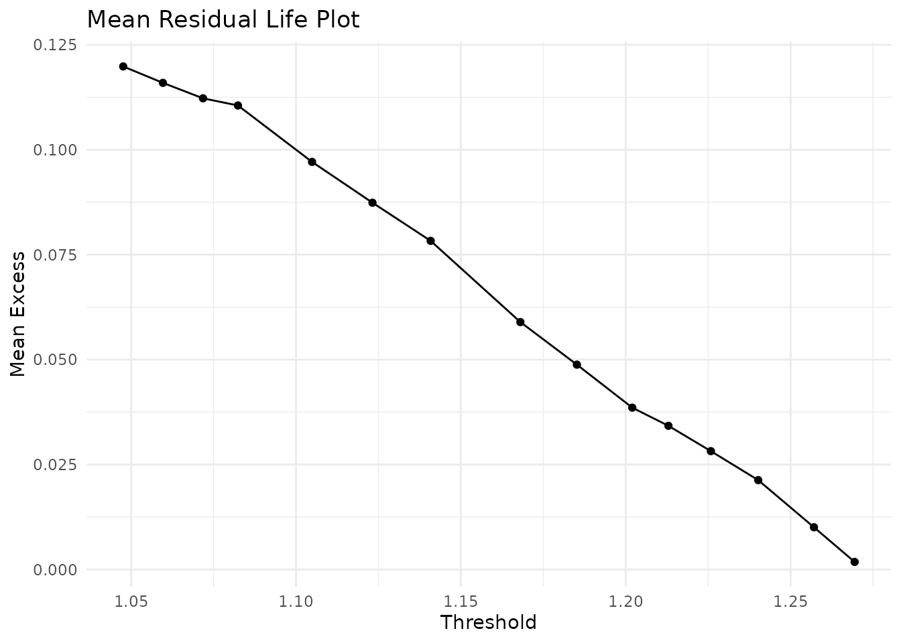
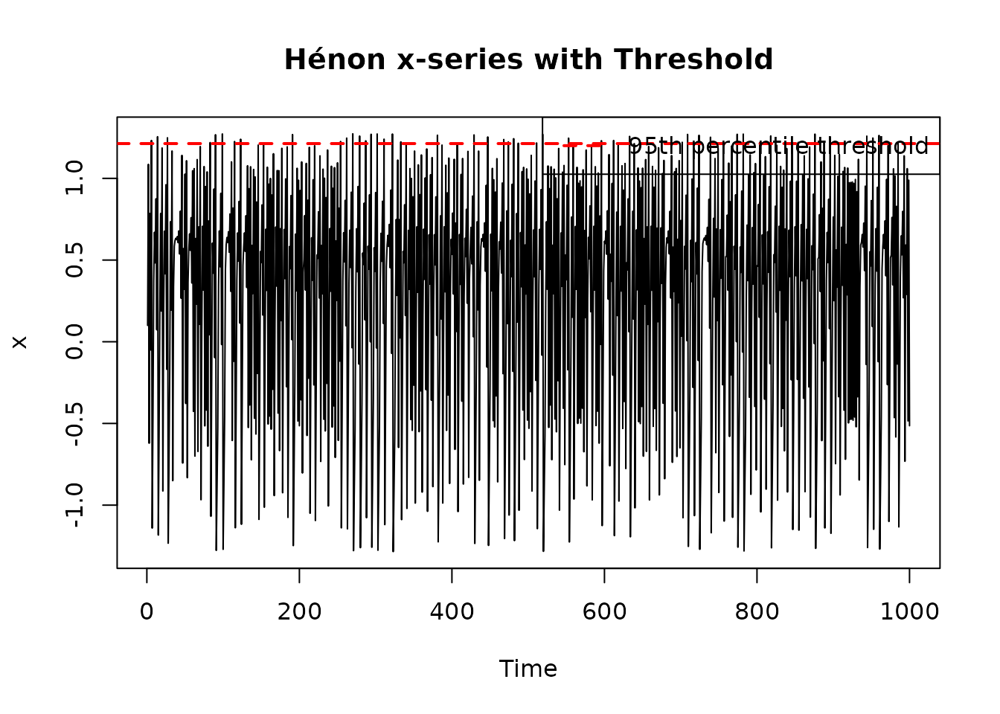

Block Maxima vs Peaks-over-Threshold for the Hénon Map
chaoticds package
2026-09-18
Source:vignettes/block-maxima-vs-pot-henon.Rmd
block-maxima-vs-pot-henon.RmdIntroduction
Extreme value theory provides two main approaches for analyzing rare events:
- Block Maxima (BM): Analyze the maximum values in fixed-size blocks
- Peaks-over-Threshold (POT): Study all exceedances above a high threshold
This vignette compares both approaches using data from the chaotic Hénon map, demonstrating their complementary perspectives on extreme behavior.
The Hénon Map
The Hénon map is a two-dimensional discrete dynamical system:
With parameters and , it exhibits a strange attractor with rich extreme value properties.
library(chaoticds)
# Load pre-generated Hénon map data
data(henon_ts)
# Extract x-component for analysis
x_series <- henon_ts$x
y_series <- henon_ts$y
cat("Dataset properties:\n")
#> Dataset properties:
cat(" Number of observations:", nrow(henon_ts), "\n")
#> Number of observations: 3000
cat(" x-component range: [", round(min(x_series), 3), ",", round(max(x_series), 3), "]\n")
#> x-component range: [ -1.285 , 1.273 ]
cat(" y-component range: [", round(min(y_series), 3), ",", round(max(y_series), 3), "]\n")
#> y-component range: [ -0.385 , 0.382 ]
plot(henon_ts$x, henon_ts$y, pch = ".", cex = 0.5,
main = "Hénon Attractor (a=1.4, b=0.3)",
xlab = "x", ylab = "y")Hénon attractor
plot(x_series[1:1000], type = "l",
main = "Hénon Map x-component Time Series",
xlab = "Time", ylab = "x")Hénon map x-component time series
Block Maxima Analysis
The block maxima approach divides the time series into non-overlapping blocks and analyzes the maximum value in each block.
Choosing Block Size
Block size selection balances bias and variance: - Small blocks: More data points but may not capture true extremes - Large blocks: Better extreme capture but fewer data points
# Test different block sizes
block_sizes <- c(25, 50, 100, 200)
n_obs <- length(x_series)
cat("Block size analysis:\n")
#> Block size analysis:
for(bs in block_sizes) {
n_blocks <- floor(n_obs / bs)
cat(sprintf(" Block size %d: %d blocks, %d observations used\n",
bs, n_blocks, n_blocks * bs))
}
#> Block size 25: 120 blocks, 3000 observations used
#> Block size 50: 60 blocks, 3000 observations used
#> Block size 100: 30 blocks, 3000 observations used
#> Block size 200: 15 blocks, 3000 observations usedLet’s use a block size of 50 for our main analysis:
block_size <- 50
maxima <- block_maxima(x_series, block_size)
cat("Block maxima statistics:\n")
#> Block maxima statistics:
cat(" Number of maxima:", length(maxima), "\n")
#> Number of maxima: 60
cat(" Range: [", round(min(maxima), 3), ",", round(max(maxima), 3), "]\n")
#> Range: [ 1.183 , 1.273 ]
cat(" Mean:", round(mean(maxima), 3), "\n")
#> Mean: 1.256
cat(" Standard deviation:", round(sd(maxima), 3), "\n")
#> Standard deviation: 0.021
hist(maxima, breaks = 20, freq = FALSE,
main = "Distribution of Block Maxima",
xlab = "Block Maximum", ylab = "Density")
lines(density(maxima), col = "red", lwd = 2)
Distribution of block maxima
GEV Fitting
The Generalized Extreme Value (GEV) distribution is the limiting distribution for block maxima:
# Attempt to fit GEV distribution
gev_result <- tryCatch({
fit_gev(maxima)
}, error = function(e) {
cat("GEV fitting failed:", e$message, "\n")
list(
estimate = c(location = NA, scale = NA, shape = NA),
method = "GEV fitting not available"
)
})
if(!is.null(gev_result) && !any(is.na(gev_result$estimate))) {
cat("GEV parameter estimates:\n")
print(gev_result$estimate)
} else {
cat("GEV distribution fitting not available with current dependencies\n")
}
#> GEV parameter estimates:
#> loc scale shape
#> 1.25584399 0.01436922 -0.83337841Peaks-over-Threshold Analysis
The POT approach analyzes all exceedances above a carefully chosen threshold.
Threshold Selection
We use the Mean Residual Life (MRL) plot to guide threshold selection:
# Define candidate thresholds
quantiles <- seq(0.85, 0.99, by = 0.01)
thresholds <- quantile(x_series, quantiles)
# Calculate MRL for each threshold
mrl_data <- mean_residual_life(x_series, thresholds)
mrl_plot(mrl_data)
Mean Residual Life plot for threshold selection
For our analysis, we’ll use the 95th percentile:
threshold <- quantile(x_series, 0.95)
cat("Selected threshold:", round(threshold, 4), "\n")
#> Selected threshold: 1.2129
# Extract exceedances
exc <- exceedances(x_series, threshold)
cat("Number of exceedances:", length(exc), "\n")
#> Number of exceedances: 150
cat("Exceedance rate:", round(length(exc)/length(x_series), 3), "\n")
#> Exceedance rate: 0.05GPD Fitting
The Generalized Pareto Distribution (GPD) models exceedances above the threshold:
# Attempt to fit GPD
gpd_result <- tryCatch({
fit_gpd(x_series, threshold)
}, error = function(e) {
cat("GPD fitting failed:", e$message, "\n")
list(
estimate = c(scale = NA, shape = NA),
threshold = threshold,
method = "GPD fitting not available"
)
})
if(!is.null(gpd_result) && !any(is.na(gpd_result$estimate))) {
cat("GPD parameter estimates:\n")
print(gpd_result$estimate)
} else {
cat("GPD distribution fitting not available with current dependencies\n")
}
#> GPD parameter estimates:
#> scale shape
#> 0.1473481 -2.4477438
plot(x_series[1:1000], type = "l",
main = "Hénon x-series with Threshold",
xlab = "Time", ylab = "x")
abline(h = threshold, col = "red", lwd = 2, lty = 2)
legend("topright", legend = "95th percentile threshold",
col = "red", lty = 2, lwd = 2)
Time series with threshold and exceedances
Extremal Index Analysis
Both approaches can inform extremal index estimation:
# Estimate extremal index using different methods
theta_runs <- extremal_index_runs(x_series, threshold, run_length = 3)
theta_intervals <- extremal_index_intervals(x_series, threshold)
cat("Extremal index estimates:\n")
#> Extremal index estimates:
cat(" Runs estimator:", if(length(theta_runs) > 0) theta_runs else "No result", "\n")
#> Runs estimator: 1
cat(" Intervals estimator:", theta_intervals, "\n")
#> Intervals estimator: 3
# Cluster analysis
sizes <- cluster_sizes(x_series, threshold, run_length = 3)
if(length(sizes) > 0) {
cat("\nCluster statistics:\n")
summary_stats <- cluster_summary(sizes)
cat(" Number of clusters:", length(sizes), "\n")
cat(" Mean cluster size:", round(summary_stats[["mean_size"]], 2), "\n")
}
#>
#> Cluster statistics:
#> Number of clusters: 150
#> Mean cluster size: 1Comparison of Approaches
Data Usage Efficiency
# Compare data usage
n_total <- length(x_series)
n_maxima <- length(maxima)
n_exceedances <- length(exc)
cat("Data usage comparison:\n")
#> Data usage comparison:
cat(" Total observations:", n_total, "\n")
#> Total observations: 3000
cat(" Block maxima approach:", n_maxima, "observations (",
round(100 * n_maxima / n_total, 1), "%)\n")
#> Block maxima approach: 60 observations ( 2 %)
cat(" POT approach:", n_exceedances, "observations (",
round(100 * n_exceedances / n_total, 1), "%)\n")
#> POT approach: 150 observations ( 5 %)Threshold vs Block Size Sensitivity
# Test sensitivity to block size
block_results <- data.frame(
block_size = c(25, 50, 100, 200),
n_maxima = NA,
max_value = NA,
mean_maxima = NA
)
for(i in 1:nrow(block_results)) {
bs <- block_results$block_size[i]
bm <- block_maxima(x_series, bs)
block_results$n_maxima[i] <- length(bm)
block_results$max_value[i] <- max(bm)
block_results$mean_maxima[i] <- mean(bm)
}
print(block_results)
#> block_size n_maxima max_value mean_maxima
#> 1 25 120 1.272751 1.238126
#> 2 50 60 1.272751 1.256267
#> 3 100 30 1.272751 1.268798
#> 4 200 15 1.272751 1.271774
# Test sensitivity to threshold
threshold_results <- data.frame(
quantile = c(0.90, 0.95, 0.98, 0.99),
threshold_value = NA,
n_exceedances = NA,
mean_excess = NA
)
for(i in 1:nrow(threshold_results)) {
q <- threshold_results$quantile[i]
thr <- quantile(x_series, q)
exc <- exceedances(x_series, thr)
threshold_results$threshold_value[i] <- thr
threshold_results$n_exceedances[i] <- length(exc)
threshold_results$mean_excess[i] <- if(length(exc) > 0) mean(exc - thr) else NA
}
print(threshold_results)
#> quantile threshold_value n_exceedances mean_excess
#> 1 0.90 1.123188 300 0.087387765
#> 2 0.95 1.212944 150 0.034230867
#> 3 0.98 1.257082 60 0.010057243
#> 4 0.99 1.269418 30 0.001804717Practical Recommendations
When to Use Block Maxima
- When interested in return levels for fixed time periods
- When data has natural blocking structure (e.g., annual maxima)
- When threshold selection is difficult
- For regulatory compliance requiring specific return periods
Conclusions
This comparative analysis demonstrates that:
- Both approaches provide valuable but complementary perspectives
- POT typically uses data more efficiently
- Block maxima offers simpler theoretical interpretation
- Threshold/block size selection critically affects results
- The Hénon map exhibits rich extreme value structure suitable for both approaches
For the chaotic Hénon map, the POT approach may be preferred due to its efficient use of extreme observations, but block maxima provides important validation of the extreme value model.